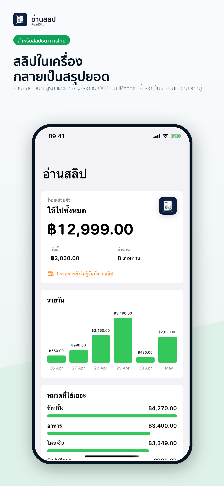

OCR บนเครื่อง
โหมดส่วนตัวอ่านสลิปด้วย Apple Vision บน iPhone และให้คุณตรวจข้อมูลก่อนบันทึกทุกครั้ง
ReadSlip for Thai payment slips
อ่านยอด วันที่ ผู้รับ และเลขอ้างอิงจากสลิปไทยด้วย OCR บน iPhone แล้วบันทึกเป็นรายจ่ายส่วนตัวหรือยอดเข้าร้าน พร้อมแดชบอร์ดรายวัน รายสัปดาห์ และรายเดือน เจ้าของร้านเริ่ม ReadSlip Pro ฟรี 7 วัน แล้วต่ออายุรายเดือน

What it does
โหมดส่วนตัวอ่านสลิปด้วย Apple Vision บน iPhone และให้คุณตรวจข้อมูลก่อนบันทึกทุกครั้ง
เลือกรูปหลายใบหรือให้แอปค้นหารูปล่าสุดที่น่าจะเป็นสลิป จากนั้นจัดกลุ่มผลลัพธ์ที่พร้อม ต้องตรวจ หรืออาจซ้ำ
พนักงานถ่ายสลิป เจ้าของร้านใช้ ReadSlip Pro เพื่อเห็นยอดรายวัน รายสัปดาห์ รายเดือน ยอดตามพนักงาน และส่งออกรายงาน PDF หรือ PNG ได้
Personal Mode
เก็บรายการส่วนตัว ค้นหาด้วยยอด วันที่ ผู้รับ หรือเลขอ้างอิง และดูสรุปรายวัน หมวดหมู่ และผู้รับที่จ่ายบ่อย
Shop Mode
เจ้าของเริ่ม ReadSlip Pro ฟรี 7 วันเพื่อสร้างหลายร้าน แสดง QR เชิญพนักงาน จัดการร้าน และลบร้านที่ตัวเองสร้างได้ พนักงานส่งสลิปพร้อมรูปผ่าน Firebase ให้เจ้าของตรวจจากอีกเครื่อง
Privacy
รูปสลิปและข้อมูลที่บันทึกอยู่บนเครื่องของคุณ เว้นแต่คุณส่งออกหรือลบเอง แอปไม่ส่งรูปขึ้นคลาวด์เพื่ออ่าน OCR
ข้อมูลร้านและรูปสลิปที่ส่งเข้าร้านซิงก์ผ่าน Firebase เพื่อให้เจ้าของร้านเห็นรายการจากเครื่องพนักงาน
Important
แอปช่วยอ่านและบันทึกข้อมูลจากสลิป แต่ไม่ได้ยืนยันสลิปกับธนาคาร ผู้ใช้ควรตรวจข้อมูลก่อนใช้งานจริงเสมอ